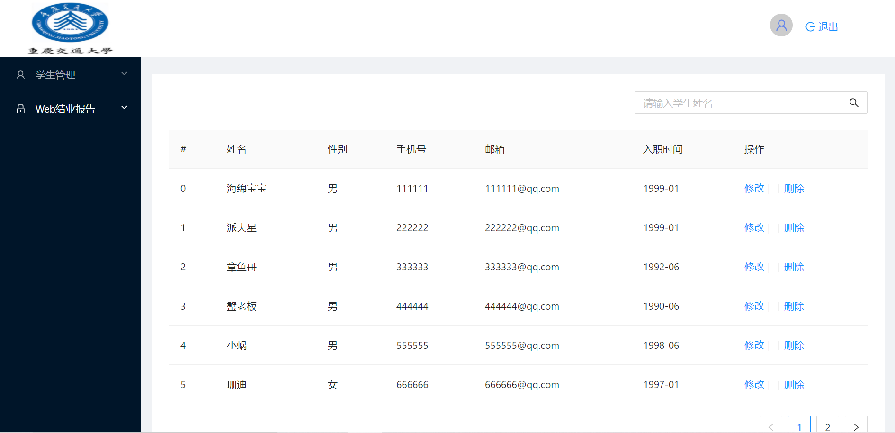

网站内容
本人做了一个学生信息管理系统，可以对学生信息进行增删改查。首先，有一个登陆的界面，
输入账号和密码后才能进入学生信息管理系统，然后有一个列表，可以对列表中的学生信息
进行增删改查。学生的信息包括：姓名，性别，邮箱，电话号码，入学时间。除此之外还有
退出系统的功能，退回到登陆界面。
开发过程
技术栈：
1. Angular
2. UI组件库：Ant Design of Angular (NG-ZORRO)
3. server:json-server
项目搭建步骤：
1：创建项目： ng new my-first-web
2: cd ng-hmr
3:使用antd: ng add ng-zorro-anted
4:ng serve --open
项目实现步骤：
1. 使用NG-ZORRO组件库中的表单构造登陆页面。通过HTTP基本认证对登录信息进行验证。
2. 通过路由守卫实现登陆访问控制，未登录不能访问home，并且退回login页，让用户进行登录。
3. 首页依然使用NG-ZORRO中的组件,左侧菜单栏可以选择服务，选择了之后可以进行相应的操作，
如增删改查。右上角有退出功能，退出之前会有提示。
4. 使用json服务器存储数据，使用http请求实现对服务器端数据的GET、POST、DELETE、PATCH。
登陆界面
主界面
问题
已解决：
1. 访问json服务器失败。
2. 图片路径不对，导致无法正常显示到界面中。
3. 使用NZ-ZORRO标签显示“** is not a known element”。
4. 某些组件不显示。
未解决：
1. 数据更新时不能更新后立即显示，必须刷新页面才能看到更新后的数据。
2. 确认退出时服务器端要删除该登录信息，当存在其它登录信息时，会出现退出失败的问题。
总结
1. 此次使用angualr开发框架开发学生信息管理系统，虽然在开发过程中遇到了很多问题，但经过不断地
查阅资料，对出现的错误基本上都进行更正。在更正错误的过程中，对angular框架有了更深的认识。
2. angular的双向数据绑定和依赖注入等特性着实很强大。双向绑定能让数据的变更实时展示到界面上，
angular 的双向绑定语法是方括号和圆括号的组合 [()]。[] 进行属性绑定，() 进行事件绑定。
3. angular数据双向绑定的原理：页面中每绑定一个数据或者事件时，就会向$watch队列中加入一条$watch,当
浏览器接受到可以被angular context（当事件触发，调用$apply进入angular context）处理的事件时，就会
触发digest循环，它会遍历每一个$watch检查其属性和值是否发生改变，如果改变则用新值覆盖旧值，直到所有
$watch检查完。如果此次digest循环有更新,那么会再次触发digest循环，直到所有的$watch都没有更新为止。
4. 以下是此次学生信息管理系统中涉及到的一些Angular CLI ng指令：
创建student组件：ng generate component student
创建student服务：ng generate service student
新建student路由：ng generate route student
运行项目：ng serve --open